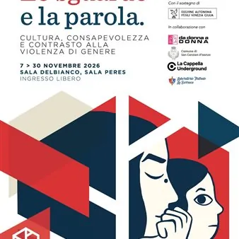

da sab 7 nov a lun 30 nov
Lo sguardo e la parola. Cultura, consapevolezza e contrasto alla violenza di genere
In occasione della Giornata Mondiale contro la violenza sulle donne, l'Assessorato alla Cultura del Comune di Staranzano organizza, in collaborazione con l’Associazione Da donna a Donna, il Laboratorio Teatrale “La Barraca”, il Comune di San Canzian d’Isonzo e la Regione…
 Indicazioni
Indicazioni
- Costi e prenotazioni
- Costo non indicato · Prenotazione non indicata
- Programma
- Programma da verificare. Apri la fonte ufficiale per orari e possibili aggiornamenti.
- In caso di maltempo
- Nessuna indicazione specifica pubblicata.
- Note
- Acquisito automaticamente dalla fonte.
L’EVENTO
Descrizione completa
In occasione della Giornata Mondiale contro la violenza sulle donne, l'Assessorato alla Cultura del Comune di Staranzano organizza, in collaborazione con l’Associazione Da donna a Donna, il Laboratorio Teatrale “La Barraca”, il Comune di San Canzian d’Isonzo e la Regione Autonoma Friuli Venezia Giulia, un ricco calendario di iniziative dedicate alla sensibilizzazione e al contrasto alla violenza di genere.
"Lo sguardo e la parola. Cultura, consapevolezza e contrasto alla violenza di genere", questo il titolo della rassegna in programma dal 7 al 30 novembre 2026 a Staranzano, che prevede mostre, proiezioni, incontri e momenti di condivisione sui temi del rispetto, della libertà, della consapevolezza e della parità di genere, con particolare attenzione alle nuove generazioni, in modo da poter riconoscere, prevenire e contrastare ogni forma di violenza e discriminazione.
La rassegna si apre sabato 7 novembre, alle ore 16:00, in Sala Delbianco con l’inaugurazione della mostra “Leo e Lea. Una storia come tante”, curata dal Centro Antiviolenza Cerchi d’Acqua di Milano. L'esposizione presenta 12 tavole illustrate e un animatic (fumetto realizzato dalla Scuola del Fumetto di Milano) che evidenziano quanto la violenza di genere sia subdola, si manifesti in varie forme nella vita di tutti i giorni e vada contrastata e bloccata subito, sia dai primi segnali. La mostra sarà visitabile fino al 13 novembre, dal lunedì al venerdì con orario 15:30-18:30; lunedì e venerdì anche 9:30-12:30.
Si prosegue sabato 21 novembre con la "Camminata in Rosso", organizzata in collaborazione con il Comune di San Canzian d’Isonzo. Una passeggiata simbolica, che partirà dal Municipio di Staranzano per poi congiungersi con il corteo parallelo, proveniente da San Canzian d'Isonzo. Tutti i partecipanti indosseranno un accessorio rosso, il colore simbolo della violenza contro le donne.
Martedì 24 novembre, alle ore 18:00, in Sala Peres è la volta della proiezione di “Persepolis”, film d'animazione autobiografico diretto dalla regista franco iraniana Marjane Satrapi. E' il racconto di un'adolescente iraniana che si ribella al nuovo regime islamico e totalitario, salito al potere in Iran dopo la rivoluzione; un regime totalitario e integralista, che opprime ed elimina tutti gli oppositori, discriminando soprattutto le donne.
Sabato 28 novembre la rassegna torna in Sala Delbianco, dove, alle ore 16:30, è previsto il laboratorio teatrale "La donna dal mito alla storia. Alle radici del problema", a cura della Compagnia Teatrale La Barraca. I giovani partecipanti al laboratorio invitano il pubblico a riflettere su temi di grande importanza e attualità, quali il rispetto, la libertà e la parità di genere.
L'ultimo appuntamento della rassegna è fissato per lunedì 30 novembre, alle ore 18:00, sempre in Sala Delbianco, e consiste nella proiezione della mostra fotografica dal titolo “I corpi delle donne come campi di battaglia”, composta dagli scatti della fotografa Cinzia Canneri, che restituiscono il ruolo della donna nella società, nella produzione grafica e in quella fotografica di oggigiorno.
Tutti gli appuntamenti sono a ingresso libero e gratuito, senza prenotazione.
Per maggiori informazioni:
Ufficio Cultura Comune di Staranzano
tel. 0481 716917
e-mail: cultura@com-staranzano.regione.fvg.it
IL PROGRAMMA
Programma e orari
Appuntamenti raccolti dalle fonti elencate. Dove manca un orario, non è ancora disponibile in questa scheda.
Programma pubblicato
- Dal 2026-11-07 al 2026-11-30
INFORMAZIONI UTILI
Prima di partire
- Controllare la fonte prima di partire.
ORGANIZZAZIONE